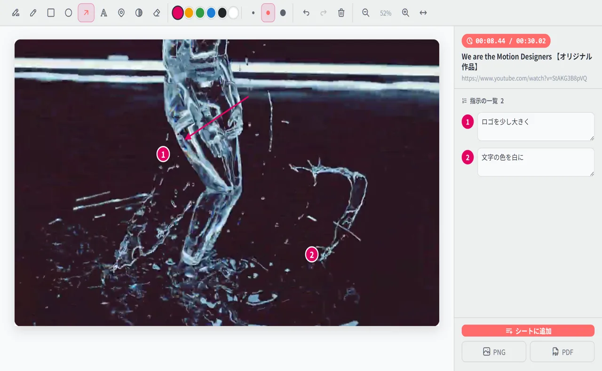
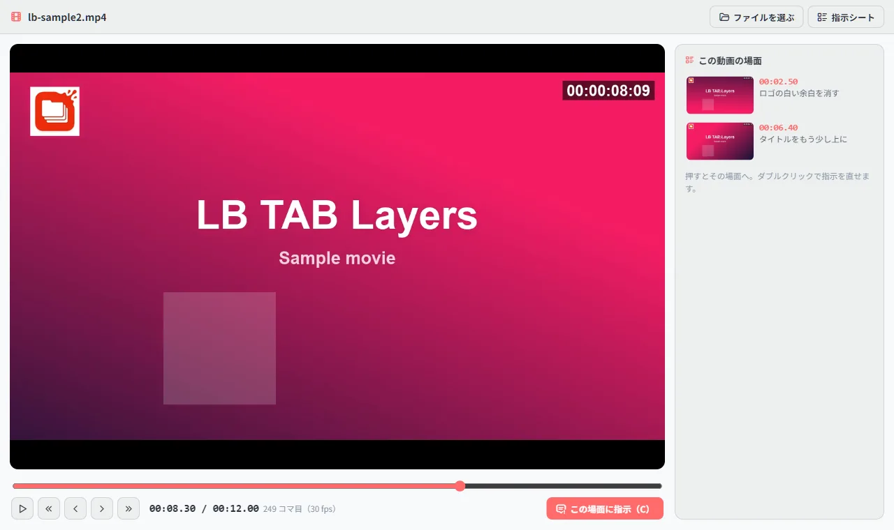

修正指示は、右の列の「修正」から始めます。① 見ているタブに合わせたボタン（動画があれば「この動画に修正指示」、なければ「このページに修正指示」）を押すと、② 動画は止まって下に書く欄が出るので、指示を書いて Enter。Web ページは画面が撮られるので、「番号ピン」で ①②③ と指示を書いて「シートに追加」を押します。③ 指示はページ・動画ごとの指示シートにまとまり、動画なら再生位置も入ります。テキストでコピーしてチャットに貼ったり、PDF・PowerPoint で送ったりできます。
📌 修正指示は、3.0.4 から使えます。この記事の画面とボタンの名前は、3.0.5 のものです。PRO の機能ですが、お試しの90日間はすべて使えます。
「1分23秒あたりの、右上のロゴ」。動画の修正を文字だけで伝えると、相手は動画を開いて、時間を探して、場所を探すところから始めることになります。LB TAB Layers の修正指示は、見ている画面をそのまま撮って、直してほしい所に番号を付けて書き、再生位置つきでまとめて渡すための機能です。
修正指示でできること
| 何を直す？ | 入口 | 入るもの |
|---|---|---|
| ブラウザで再生中の動画 YouTube・Vimeo・Google ドライブなど | Alt+Shift+C／右クリック「この場面に修正指示」／「修正」の画面 | 止めた場面の画像・再生位置・動画の題名 |
| 見ている Web ページ | 「修正」の画面（見えている所／ページ全体） | ページの画像・題名・URL |
| ページの中の画像1枚 チャットで届いた画像など | 画像を右クリック「この画像に修正指示」 | その画像だけの切り抜き |
| 手元の動画ファイル | 「修正」の画面 →「手元の動画ファイル」 | 元の大きさのコマ・再生位置（1コマずつ送れる） |
どれも、書いた指示はページ・動画ごとの「指示シート」にたまっていきます。
① 「修正」を開く
Alt+T（Mac は Option+T）でサイドパネルを開き、「修正」を押します。いま見ているタブに合わせたボタンが、1つ大きく出ます。動画があれば「この動画に修正指示」、なければ「このページに修正指示」。「手元の動画ファイルを開く」は、いつでも押せます。
スクリーンショットは「撮って、すぐ使う」ための道具、修正指示は「直してほしい所を伝える」ための道具です。入口を分けているので、迷わずに始められます。撮ったスクショをあとから修正指示にしたいときは、画像の下の「修正指示にする」を押します。
② 止めて書く・撮って書く
ブラウザで再生中の動画（YouTube・Vimeo・Google ドライブ）
直したい場面で Alt+Shift+C を押します（設定なしで使えます。ページの右クリック「この場面に修正指示」でも同じです）。動画が止まり、動画の下に書く欄が出ます。指示を書いて Enter を押すと、その場面が再生位置（例：00:08.44）つきで保存されて、動画は再生を続けます。2回めからは C を押すだけです。
画面のどこかを指したいときは、「絵に書き込む」（D）を押します。同じ画面のまま、止めた場面に番号ピンや矢印を書けます。

- 番号ピン（N）：押した所に ①②③… が付き、右の欄に指示を書けます。指示書の中心です
- 矢印・四角・丸・文字・マーカー・ペン：場所や向きを伝えるときに
- ぼかし：見せたくない所を隠します
- Ctrl+Z で元に戻す。書き終えたら Ctrl+Enter で保存して、動画に戻ります
止めたときにサイトの案内（ログインのお誘いなど）や再生ボタンが動画の上に出ても、撮る瞬間だけ隠すので写りません。画面の細かさやブラウザの拡大が違うパソコンでも、映っている部分だけを切り抜きます。
見ている Web ページ・ページの中の画像
サイトや資料の確認は、「修正」の画面の「このページに修正指示」を押します。画面が撮られて書き込みの画面が開くので、番号ピンで書いて「シートに追加」を押します。チャットで届いたデザイン案のように、画像1枚だけに書きたいときは、その画像を右クリックして「この画像に修正指示」を選びます。
手元の動画ファイル
書き出した確認用の動画は、「修正」の画面の「手元の動画ファイルを開く」で開きます。ファイルをドラッグするか「ファイルを選ぶ」で開くだけで、ファイルはどこにも送りません。

| キー | できること |
|---|---|
| Space | 再生／一時停止 |
| , と .（← → でも） | 1コマ戻す・送る（コマの速さは自動で測ります） |
| Shift + ← → | 1秒戻す・送る |
| C | 止めて書く → Enter で保存して再生 |
| D | 止めて、同じ画面のまま絵に書き込む |
手元の動画では、画面に映っている大きさではなく、動画の元の大きさでコマを撮ります。MP4（H.264）・WebM など、Chrome で再生できる動画が開けます（ProRes は再生できません）。
③ 指示シートで伝える
書いた指示は、その動画（またはページ）の指示シートにまとまります。サイドパネルの「修正」の下の一覧から開けます。動画は再生位置の順、Web ページは撮った順に並びます。
- 再生位置を押すと、その場面へ：YouTube なら開いているタブがその秒まで戻ります。閉じていれば、時間つきの URL で開きます
- 済：直したものにチェック。薄く表示されます
- 次の版を始める：v1 の指示のあと、直ってきた動画には v2 として指示を書けます。「すべての版」から版ごとに絞れます
書き出しは5つ
| 書き出し | 使いどころ |
|---|---|
| テキストをコピー | チャット・メールにそのまま貼る |
| 画像と指示を並べた修正指示書として送る | |
| PowerPoint | 打合せで画面に映す・社内で共有する |
| Markdown | メモアプリや課題の管理に。動画は再生位置つきのリンクになる |
| CSV | 表計算や制作管理の表に（再生位置・番号・指示・済・版） |
「テキストをコピー」は、たとえばこんな形になります。
【修正指示】We are the Motion Designers 【オリジナル作品】 https://www.youtube.com/watch?v=StAKG3B8pVQ 00:08.44 ① ロゴを少し大きく ② 文字の色を白に 00:16.42 ［済］ ① ここで0.5秒長く見せる
【実体験】修正指示で、いちばん時間がかかっていたのは「場所を伝えること」
私たちは映像制作の会社で、毎日のように動画の確認と修正のやりとりをしています。いちばん時間がかかっていたのは、直す作業そのものより、「どの場面の、どこか」を伝えて、わかってもらうことでした。時間を書き写し、画面を撮って、矢印を描いて、チャットに貼る。この行き来を、見ている画面の上で済ませたくて作ったのが、この機能です。
知っておきたいこと
- 保存先はこのパソコンの中：撮った画像と指示は、ブラウザの中（拡張の保存領域）に残ります。パネルを閉じても、Chrome を再起動しても消えません。当社には送りません
- 撮れない動画：著作権保護のある動画（動画配信サービスの一部など）は、画面を撮ると黒くなります
- 再生位置の表示：時間（00:08.44）・フレーム数・分:秒:フレーム から選べます。ブラウザのプレイヤーはフレームぴったりには止まらないことがあるので、コマまで合わせたいときは「手元の動画ファイル」を使います
- 撮れる画像の大きさ：ブラウザの動画は、画面に映っている大きさで撮ります。元の大きさで撮りたいときは「手元の動画ファイル」を使います
- プラン：PRO の機能です。お試しの90日間はすべて使えます
スクリーンショットそのものの撮り方は「【機能ガイド】一括スクリーンショット」、右クリックでできることは「【機能ガイド】右クリックメニュー」もどうぞ。
🎬 修正指示のほかにも、いろいろできます。パネルを開く、保存したタブを開く、閉じたタブを履歴から戻す、ページにひもづけたメモ、ピンバーまで。ブラウザとパネルの動きをそのまま見られる 操作ガイド（動く画面で見る10の操作） にまとめています。入れたばかりの方は クイックチュートリアル（5分） からどうぞ。
よくある質問
Q. YouTube の動画に、再生位置つきで修正指示を書けますか？
はい。直したい場面で Alt+Shift+C を押すと、動画が止まって下に書く欄が出ます。指示を書いて Enter を押すと、再生位置（例：00:08.44）と題名つきで保存され、動画ごとの指示シートにまとまります。動画は再生を続けます。
Q. Vimeo や Google ドライブの動画でも使えますか？
使えます。Vimeo・Google ドライブのプレビュー、ほかのサイトに埋め込まれた動画でも、再生中の動画を見つけて止め、その場面を撮ります。著作権保護のある動画は、画面を撮ると黒くなるため使えません。
Q. 手元の動画ファイルにも修正指示を書けますか？
「修正」の画面の「手元の動画ファイルを開く」で開けます。, と . で1コマずつ送れて、C でその場面に指示を書けます。ファイルはどこにも送りません。Chrome で再生できる MP4・WebM などが対象で、ProRes は再生できません。
Q. 書いた指示は、どうやって相手に送りますか？
指示シートの「テキストをコピー」で、再生位置と ①②③ の指示をチャットやメールに貼れます。PDF・PowerPoint・Markdown・CSV でも書き出せます。
Q. 撮った画像や指示は、どこに保存されますか？
このパソコンのブラウザの中（拡張の保存領域）です。当社のサーバーには送りません。サイドパネルを閉じても、Chrome を再起動しても消えません。
▶ 実際の操作を動画で見る
サイドバーで、ブックマークとタブをいっしょに管理する様子です。